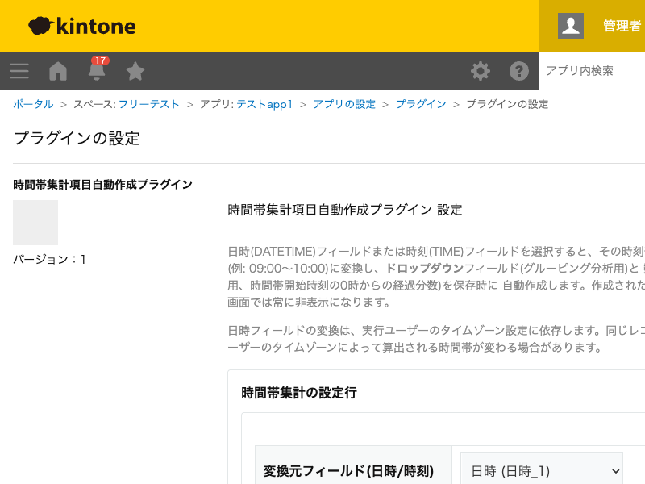

GovAppsプラグイン 安全性を確認できる無料kintoneプラグイン集
日時(DATETIME)・時刻(TIME)フィールドを選択すると、その時刻部分を「時間帯」の区分 (例: 09:00〜10:00)に変換し、ドロップダウンフィールド(グルーピング分析用)と 数値フィールド(数値分析用、時間帯開始時刻の0時からの経過分数)を保存時に 自動作成します。作成された2フィールドはレコード画面では常に非表示になり、集計・グラフ機能から そのまま利用できます。
受付日時フィールドから「9:00〜10:00」のような時間帯のドロップダウンを自動作成し、kintone標準のグラフ機能でその選択肢ごとに件数集計・傾向分析ができます。区切り幅は15分〜12時間まで選べます。
ドロップダウンと同時に作成される数値フィールド(時間帯開始時刻の0時からの経過分数)を使うと、平均到着時刻の算出や数値としてのグラフ表示など、ドロップダウンだけでは難しい分析にも対応できます。
一覧画面の絞り込み条件に該当する既存レコードへ、一括で時間帯を反映するボタンを表示できます。実行できるユーザーはグループ(ロール)で絞り込めます。
作成された2フィールドはレコード画面(詳細・作成・編集)では常に非表示になります。一覧画面・グラフ画面では通常のフィールドとして表示・利用できます。日時フィールドの変換は実行ユーザーのタイムゾーン設定に依存するため、同じレコードでも実行するユーザーによって算出される時間帯が変わる場合があります。
kintoneセキュアコーディングガイドラインに沿って実装時にチェックしています。特に重要な点は次のとおりです。
kintone.api()(kintone自身への呼び出し専用の内部ラッパー)のみを使用しています。外部サーバーへの通信は一切行わず、外部ライブラリも使用していません。innerHTMLではなくtextContentのみを使用しています。詳細な確認項目・確認日は下記GitHubのチェックリストに全項目を掲載しています。

設定の保存時に、フィールド追加API・アプリ設定の反映API(kintone.api()経由)を1回ずつ
実行します(既に同じフィールドが作成済みの場合はスキップされ、実行されません)。通常のレコード
保存・フィールド変更時の時間帯算出はkintone標準の保存処理に含まれ、追加のAPI実行はありません。
一覧画面からの一括実行では、対象レコード数に応じてレコード取得API(500件ごとに1回)・書き戻しAPI
(100件ごとに1回)を実行し、実行前に見積もり回数を表示します。